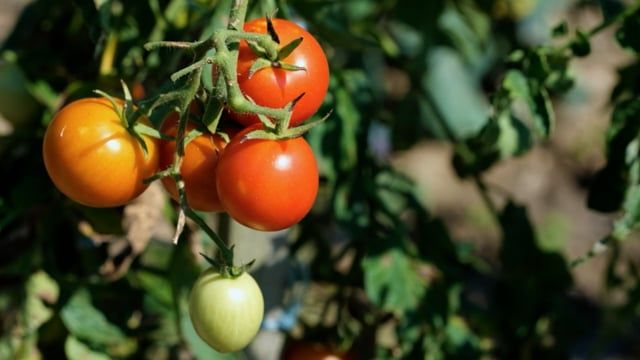

Tomat
Nama Ilmiah: Solanum lycopersicum (Famili Solanaceae)
Tomat merupakan tanaman hortikultura semusim yang sangat populer karena buahnya serbaguna—dapat dikonsumsi langsung sebagai buah segar, dijadikan jus sehat, maupun diolah sebagai bumbu masakan sehari-hari. Tanaman ini berbatang lunak, berdaun menyirip, dan menghasilkan buah berwarna hijau saat muda lalu berubah menjadi merah cerah ketika matang.
Kandungan Gizi Utama
- Likopen: Pigmen alami pemberi warna merah yang berperan sebagai antioksidan kuat penangkal radikal bebas.
- Vitamin C & Vitamin A: Mendukung daya tahan tubuh dan menjaga kesehatan jaringan mata serta kulit.
- Kalium & Folat: Mineral penting untuk menjaga keseimbangan cairan tubuh dan tekanan darah.
- Kadar Air Tinggi (±94%): Membantu menjaga hidrasi tubuh dan melancarkan sistem pencernaan.
Manfaat Bagi Kesehatan
- Menjaga Kesehatan Jantung: Kandungan likopen dan kalium membantu menurunkan kadar kolesterol jahat (LDL).
- Menyehatkan Mata & Kulit: Beta-karoten dan lutein melindungi mata dari kelelahan serta menjaga elastisitas kulit.
- Meningkatkan Imunitas Pelajar: Vitamin C membantu tubuh tetap bugar saat beraktivitas di sekolah.
- Melancarkan Pencernaan: Serat alami pada kulit dan daging buah mencegah sembelit.
Tips Singkat Budidaya Tomat di Pekarangan / Polybag
1. Media Tanam & Cahaya: Gunakan campuran tanah gembur, kompos, dan sekam bakar (1:1:1). Letakkan di area yang mendapat sinar matahari penuh minimal 6 jam per hari.
2. Penyiraman & Ajir: Siram secara rutin pada pagi atau sore hari (hindari menggenang). Pasang bilah bambu (ajir) saat tinggi tanaman mencapai 30 cm agar batang tidak roboh saat berbuah.
3. Masa Panen: Tomat mulai dapat dipanen pada umur 60–75 hari setelah tanam ketika buah mulai berubah warna menjadi kemerahan.